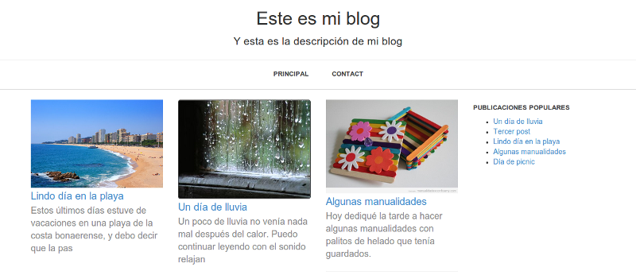

Miniblog
Un CMS minimalista para blogs
Proyecto mantenido por ozcristian
Miniblog
Miniblog es un CMS para la creación de blogs. Fue desarrollado utilizando el framework Silex y tiene como propósito ser un CMS de fácil administración para proyectos sencillos.

Funciones principales
- Listar, agregar, borrar y modificar publicaciones
- Listar, agregar, borrar y modificar comentarios
- Listar, agregar, borrar y modificar categorías
- Personaliar el título y la descripción del blog
Instalación
La instalación puede lograrse en 3 pasos:
- Desde un cliente MySQL se importa el archivo db.sql, el cual contiene la definición de la base de datos necesaria para el blog.
- Se edita el archivo config/settings.yml con la información necesaria para la conexión a la base de datos.
- El blog ya está listo para usarse.